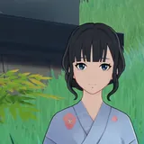
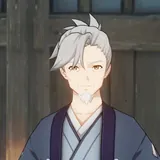
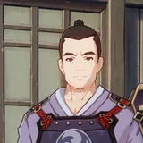

Chương II · Màn I
Lôi Thần Uy Nghiêm, Địa Đàng Vĩnh Hằng
Nhiệm vụ Ma Thần — Inazuma
Nhân vật xuất hiện
 Nhân vật chính · Nhà Lữ HànhLumineNhà Lữ Hành đến từ thế giới khác. Bị vị thần lạ mặt phong ấn và cướp mất người anh song sinh, cô bắt đầu hành trình đi tìm Bảy Vị Thần của Teyvat.
Nhân vật chính · Nhà Lữ HànhLumineNhà Lữ Hành đến từ thế giới khác. Bị vị thần lạ mặt phong ấn và cướp mất người anh song sinh, cô bắt đầu hành trình đi tìm Bảy Vị Thần của Teyvat. Bạn đồng hànhPaimonĐược Lumine cứu khỏi chết đuối hai tháng trước, Paimon tự nhận làm người dẫn đường cho cô. Hay ăn, hay nói, và rất ghét bị gọi là “thực phẩm dự trữ”.
Bạn đồng hànhPaimonĐược Lumine cứu khỏi chết đuối hai tháng trước, Paimon tự nhận làm người dẫn đường cho cô. Hay ăn, hay nói, và rất ghét bị gọi là “thực phẩm dự trữ”.- Người hầu của nhà Kamisato · Hiệp Hội YashiroThomaNgười đón Lumine ở Đảo Ritou, được Beidou giới thiệu là “thổ địa” và đối tác làm ăn. Bày ra những “khảo nghiệm” để xem cô có đủ sức “thay đổi thời cuộc” hay không.
 “Shirasagi Himegimi” · Đại tiểu thư Hiệp Hội YashiroKamisato AyakaNgười chống lại lệnh Truy Lùng Vision. Hứa tiến cử Lumine với Raiden Shogun nếu cô giúp ba người mất Vision.
“Shirasagi Himegimi” · Đại tiểu thư Hiệp Hội YashiroKamisato AyakaNgười chống lại lệnh Truy Lùng Vision. Hứa tiến cử Lumine với Raiden Shogun nếu cô giúp ba người mất Vision. Chủ Tiệm Pháo Hoa NaganoharaYoimiya“Nữ Hoàng Lễ Hội Hè” của Hanamizaka. Dùng Vision giả che mắt samurai và cùng Lumine lẻn vào Sở Trị An cứu sư phụ Masakatsu.
Chủ Tiệm Pháo Hoa NaganoharaYoimiya“Nữ Hoàng Lễ Hội Hè” của Hanamizaka. Dùng Vision giả che mắt samurai và cùng Lumine lẻn vào Sở Trị An cứu sư phụ Masakatsu. Đại tướng Quân Shogunate · Hiệp Hội TenryouKujou SaraCon nuôi nhà Kujou, người thi hành lệnh Truy Lùng Vision. Trách phạt thuộc hạ dụng tư hình và tha cho nhóm Lumine đưa Masakatsu đi “chỉ lần này”.
Đại tướng Quân Shogunate · Hiệp Hội TenryouKujou SaraCon nuôi nhà Kujou, người thi hành lệnh Truy Lùng Vision. Trách phạt thuộc hạ dụng tư hình và tha cho nhóm Lumine đưa Masakatsu đi “chỉ lần này”.- Đại pháp sư Đền NarukamiYae Miko“Yae đại nhân” có quan hệ thân thiết với Shogun. Chỉ ra căn bệnh của Domon và nói với Lumine rằng cô đến đúng thời cơ.
 Thủ lĩnh đội thuyền Nam Thập TựBeidouGiữ lời hứa, đưa Lumine vượt qua giông bão đến Đảo Ritou trên thuyền “Ngôi Sao Chết Chóc”, rồi giao cô cho Thoma.
Thủ lĩnh đội thuyền Nam Thập TựBeidouGiữ lời hứa, đưa Lumine vượt qua giông bão đến Đảo Ritou trên thuyền “Ngôi Sao Chết Chóc”, rồi giao cô cho Thoma.
Đại tiểu thư nhà Hiiragi · Hiệp Hội KanjouHiiragi ChisatoNhờ Lumine đưa thư cho người thương Kujou Kamaji, đổi lại giúp cô trốn khỏi Đảo Ritou bằng đoàn hàng đi Đảo Watatsumi.- HGia chủ nhà Hiiragi · Hiệp Hội KanjouHiiragi ShinsukeTiếp đón Lumine niềm nở nhưng giao những việc vô lý để giữ chân cô lại Đảo Ritou.
- WThương nhân người Mondstadt kẹt ở Đảo RitouWernerKẻ bán “Tủy Pha Lê” giá cao cho Keijirou. Nhớ quê, cuối cùng khai ra mưu đồ và dẫn Lumine đi tìm bằng chứng.
- KHội trưởng Thương Hội Vạn QuốcKurisuThương nhân người Fontaine, bạn thân của Thoma, đang khốn đốn vì thuế “Tủy Pha Lê”.

Người canh giữ Làng KondaTejimaBảo vệ làng suốt 30 năm để chờ một người. Mất Vision và quên đi lý do mình ở lại.
Samurai Quân ShogunateKurosawa KyounosukeTự bỏ tiền mua “lương thực cứu tế” cho dân, sau khi mất Vision thì quên hết và bị dân làng trách móc.- DChưởng môn phái Meikyou ShisuiDomonKiếm đạo gia muốn thành thiên hạ đệ nhất, phát điên sau khi mất Vision. Được sư huynh Anzai và các đệ tử giúp tỉnh lại.
- MNghệ nhân làm Vision giảMasakatsuNgười làm Vision giả giúp Hiệp Hội Yashiro, bị Hiệp Hội Tenryou bắt giam ở Sở Trị An.
Các phần
- Phần 1Ngày Khởi Hành
- Phần 2Lời Ăn Năn Của Kẻ Tha Hương
- Phần 3Kế Hoạch Thoát Khỏi Đảo Ritou
- Phần 4Ba Tâm Nguyện
- Phần 5Ý Nghĩa Của Việc Chờ Đợi Vô Nghĩa
- Phần 6Mong Thiện Giả Thiện Báo
- Phần 7Con Đường Kiếm Đạo Lát Bằng Ước Mơ
- Phần 8Đóa Hoa Nở Trong Ngục
Toàn bộ lời thoại được lấy từ bản tiếng Việt chính thức của trò chơi. Ở những đoạn người chơi được chọn câu trả lời, truyện chọn một lựa chọn duy nhất.